scroll down to the left
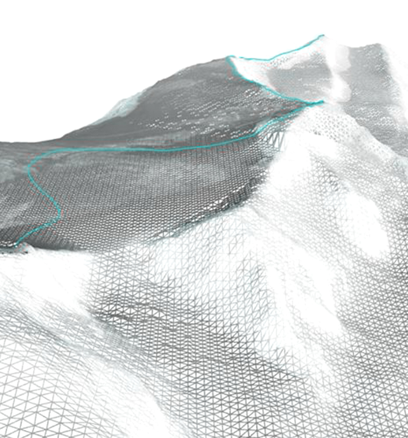
THE MYTH OF "NATURAL" BORDERS
02.
The distinction between "natural" borders (coasts, deserts, mountains and rivers) and "artificial" ones (parallels and meridians) has many historical lineages. In the seventeenth century, Cardinal Richelieu proposed that France had natural limits to which the country should expand, but not go further. (Elden 2013b) This has been a common practice since the early modern period, everywhere in the mountain ranges - particularly way the watershed - were used as territorial boundaries (the Pyrenees and the Andes, among others
scroll down to the left
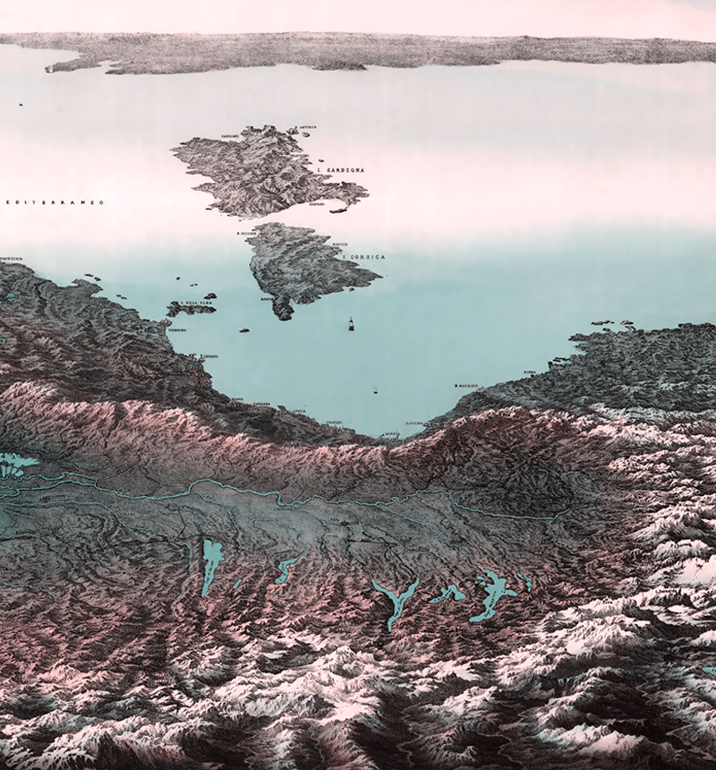
A DYNAMIC LAND
04.
"Ice complicates a world view where solid, stable land is positioned opposite liquid, mobile water. Ice melts and freezes; it breaks apart and moves; it has both land-like and water-like social properties; its edges are unclear. Ice is as challenging for international lawyers, boundary practitioners, and political theorists as it is for geoscientists and global environmental policymakers." (ICE LAW Project, 2019)
scroll down to the left
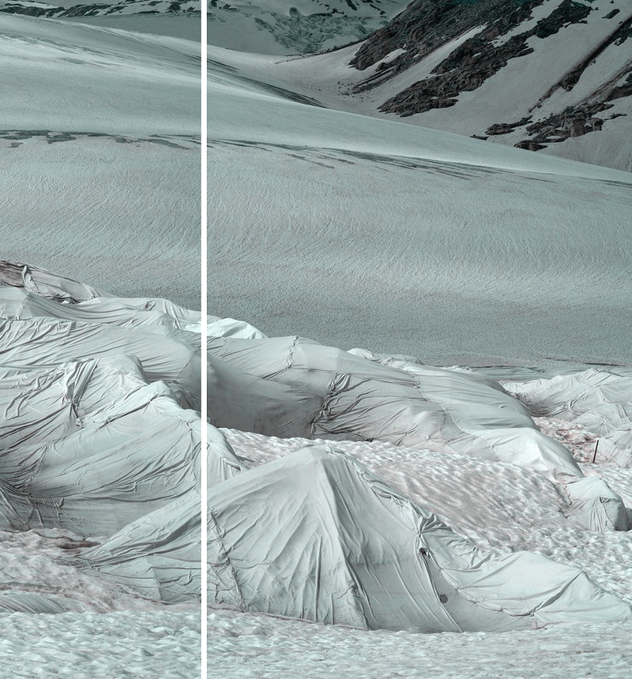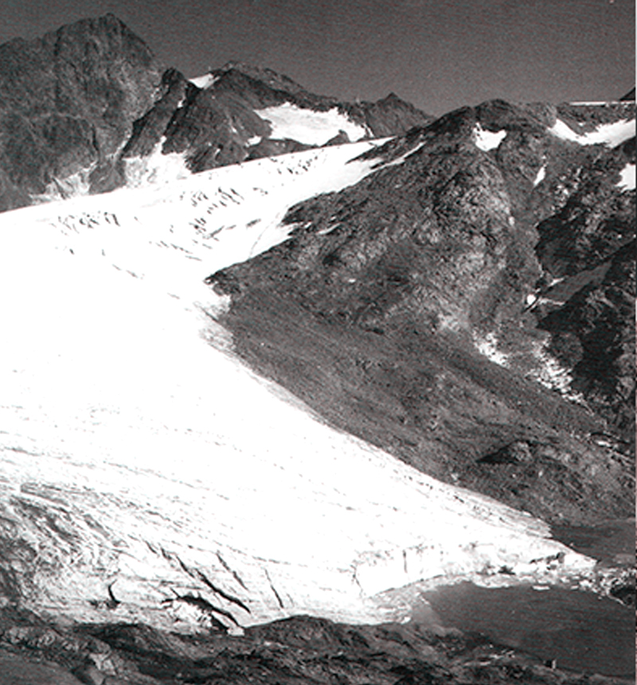
06.
IGM holds the original record of the current Italian border line and retains historical documentation of all past border investigations (Ferrari, Pasqual, and Bagnato 2019). Archives like this have long since shaped and ensured modern notions of boundaries and their materialization on the ground; digging these stories -by asking how the "natural" was conceptualized, represented, and exploited in the nation building- is a way to highlight the extent to which Western political history and planetary environmental change are intertwined.
scroll down
06.
Therefore, by questioning the landscape aesthetics of the representation of the border on the basis of the work of Stuart Elden and Eyal Weizman, I question the visual and aesthetic dimension of the landscape, as a way of seeing (visualizing, depicting, representing, and therefore managing and shaping) the border. Therefore, it becomes necessary to problematize the conventional representation of borders: when and how did the Alps become an acceptable border between states? What does it mean to think of a border - what are the policies behind it?
scroll down to the left
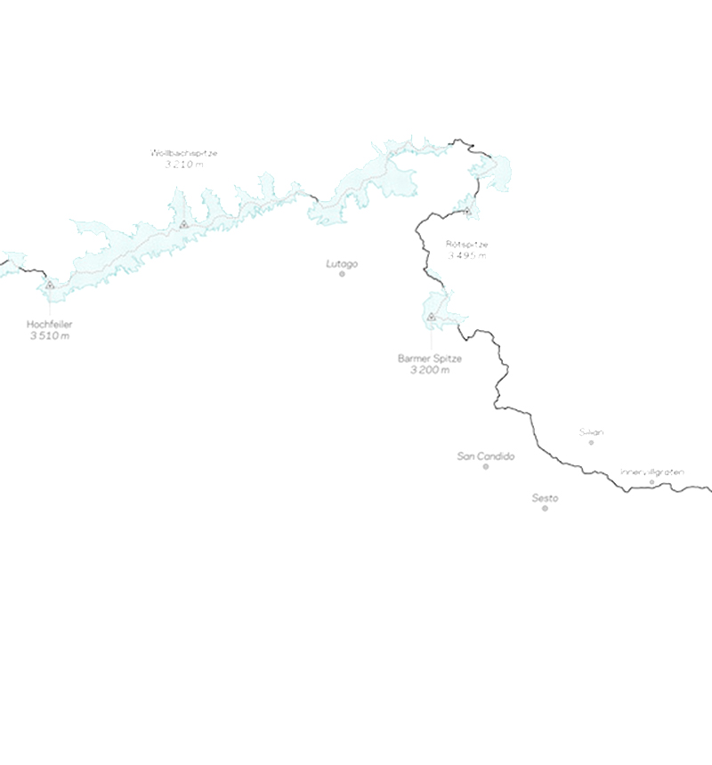
07.
To begin this reasoning, I would first like to understand the idea of the Alpine territory, of static borders and dynamic processes and of the relationship between them. The modern notion of boundary is linked to a limited and two-dimensional conception of space (Elden 2013a); however, this conception is a rather recent construct linked to the formation of territorial states. This is indicated by Agnew and Corbridge (1994 p.83) as the "territorial trap" in which sovereign states are thought of as independent groups and economies enclosed in an immutable form.
scroll down to the left
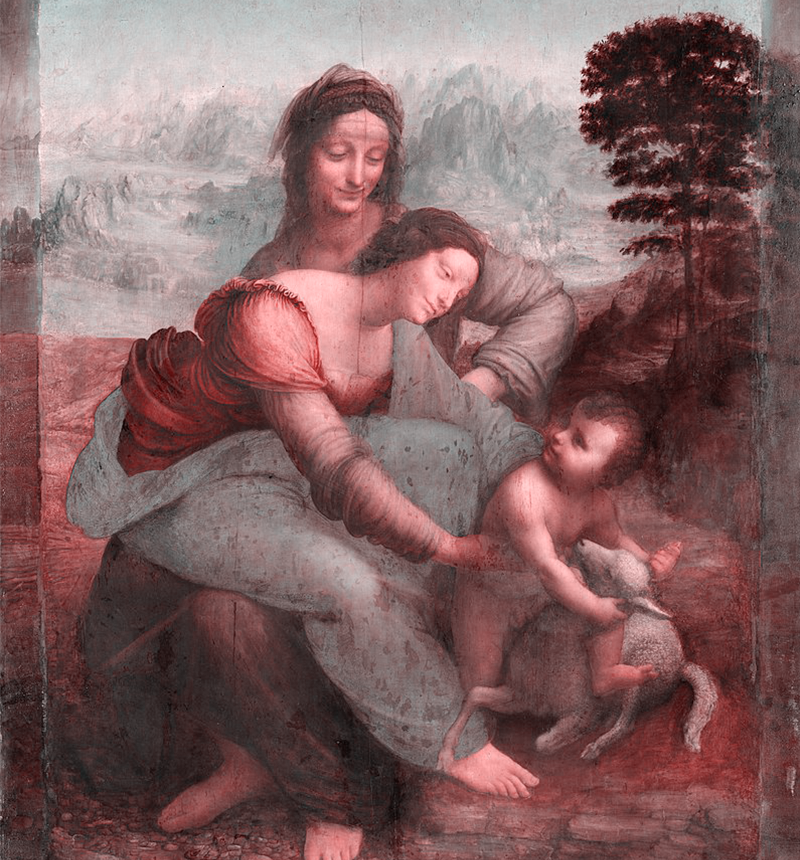
09.
The conceptions saw the mountain as the seat of divinity, but at the same time as an inaccessible place reserved for the gods themselves; the mountain landscape is therefore a hostile and enemy landscape par-excellence.
scroll down to the left

11.
We are still far from an “aesthetic” gaze towards the mountain, but slowly the Alps break away from the background of human events and impose their image in the philosophical and aesthetic discourse. In this period everything can become significant, "as long as it arouses an emotion" (F. Brevini 1987); Goethe reminds us of this by writing pages full of poetry dedicated to the poor villages of Alto Adige described as "a romantic arcadia and lost "
scroll down to the left
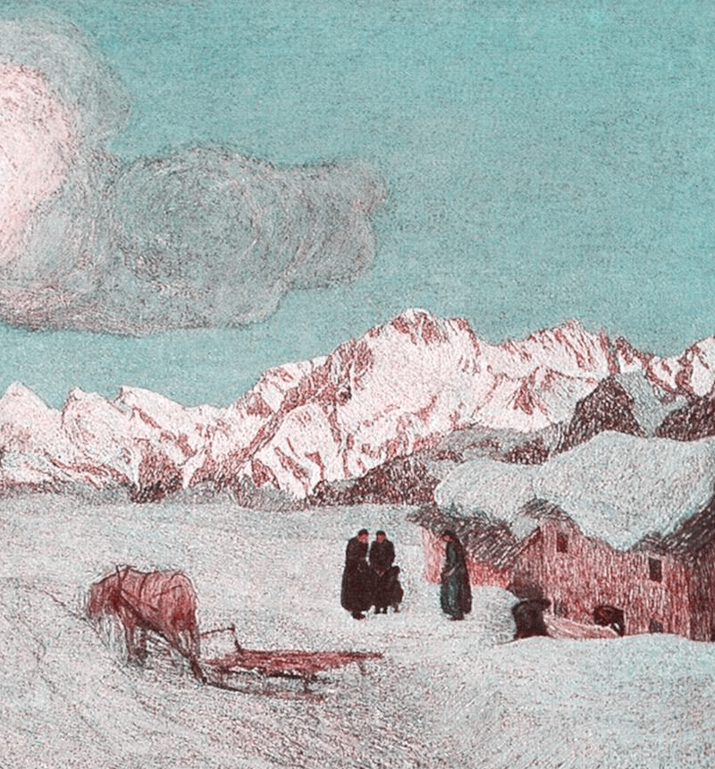
12.
Here nature is tamed through the pictures of the picturesque and the description of good savages in harmony with nature (De Rossi 2014). The mountain is reduced to an inclined surface to be conquered. The representation of the mountains, therefore, assumes verticality and materiality; however, it remains an extremely static and two-dimensional vision far from the concept of "volume" (Weizman 2017).
scroll down to the left
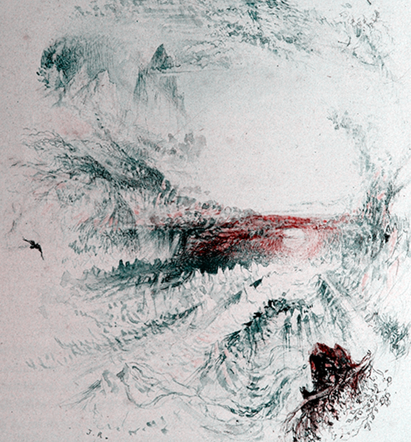
VOLUMETRIC / BIDIMENSIONAL
15.
Therefore, the construction of the political (cons)-sense through an aesthetic of the glacier has made it possible to re-territorialize the Alps; in addition, the Italian nationalist narrative took over. Thanks to this, the transition from a "natural region" to a "natural border" was easy (Farinelli 2009).
scroll down to the left
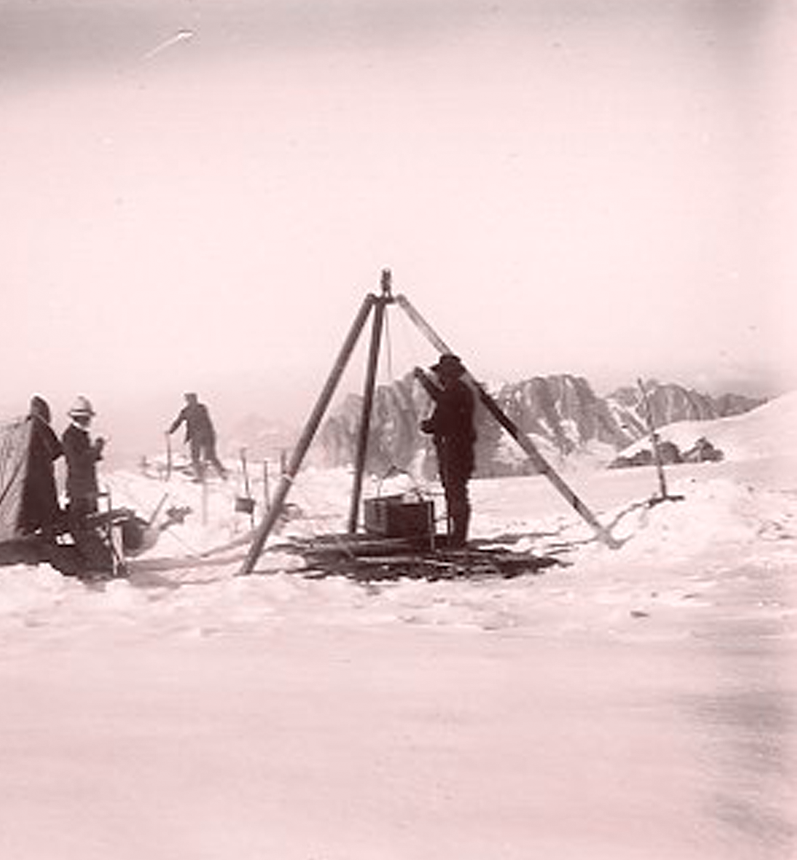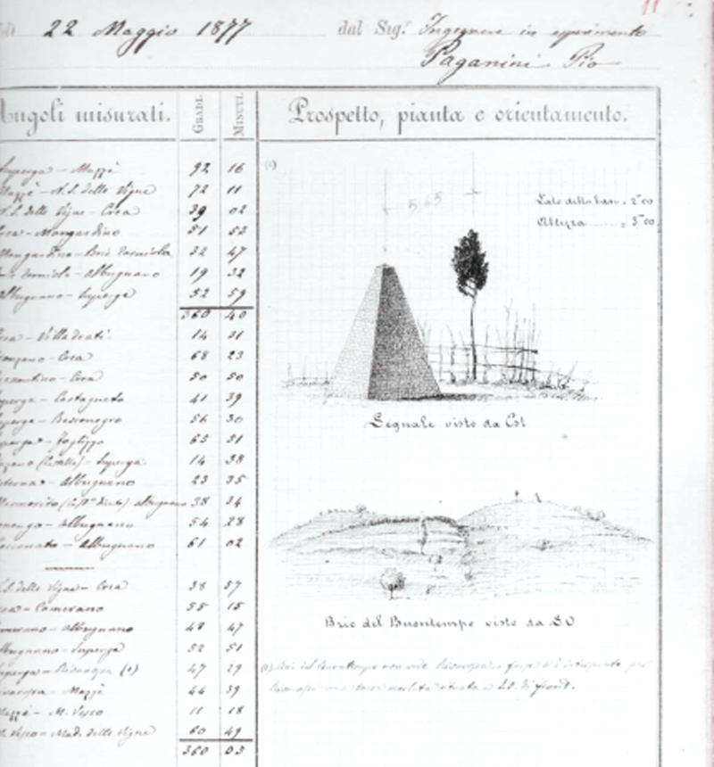
18.
The Italian expansionists represented territorial acquisitions as examples of "reconquest" of lands that were "naturally" Italian. Although these lands were only partially inhabited by Italian-speaking people, through the lens of nationalism, they seemed Italian in their essence, and therefore in their entirety. Consequently, the expansion of the Italian border has resulted in the suppression of any non-Italian linguistic and ethnic elements: Serbian, Slovenian and Croatian in the east and German and Ladin in the north. Lands that had never been part of Italy in theory became totally Italian, all remaining inhabited, in practice, by majority groups that were now oppressed.
scroll down to the left
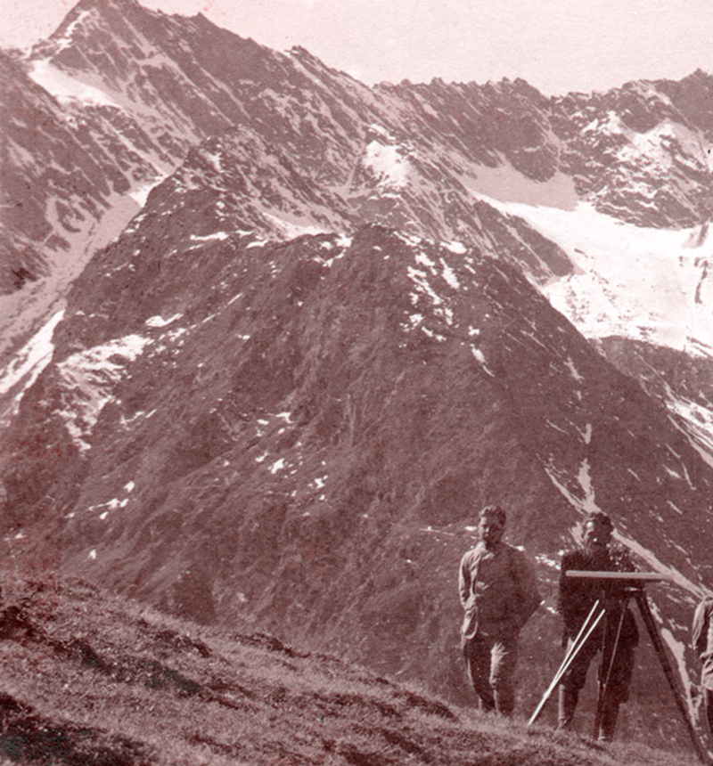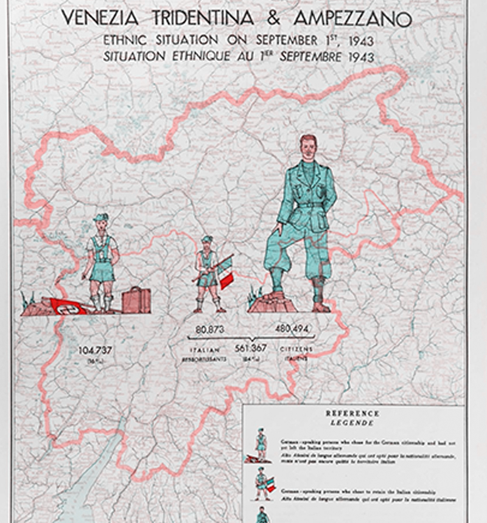
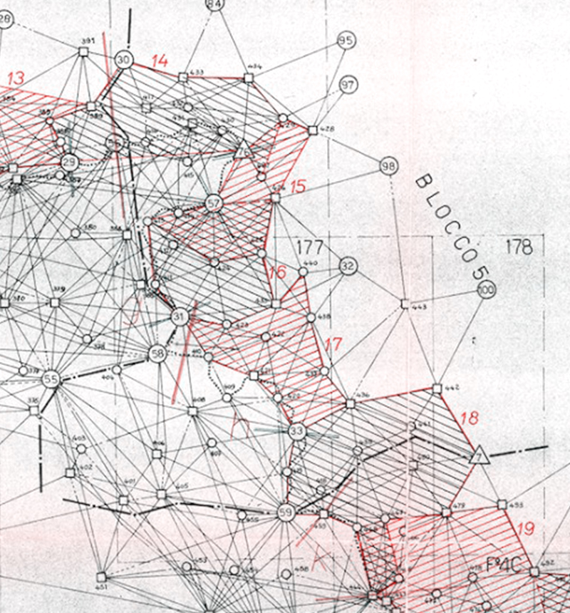
23.
Considering Italy's northernmost border from the point of view of its colonial history shows how this border is, in a sense, the opposite of what appears to be in Italian atlases and textbooks: an arbitrary external border for a new status rather than a marker destined forever. The border seems to be engraved on the top of the mountain, but it is impermanent as are other landmarks of nature, especially those affected by climate change; with it also the symbolic fixity of the nation-state that linked its border to the Alpine ridges.
scroll down to the left
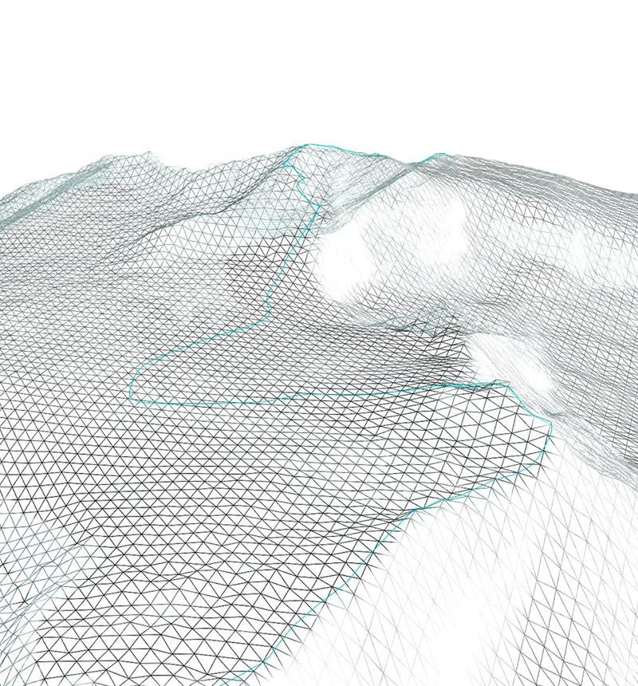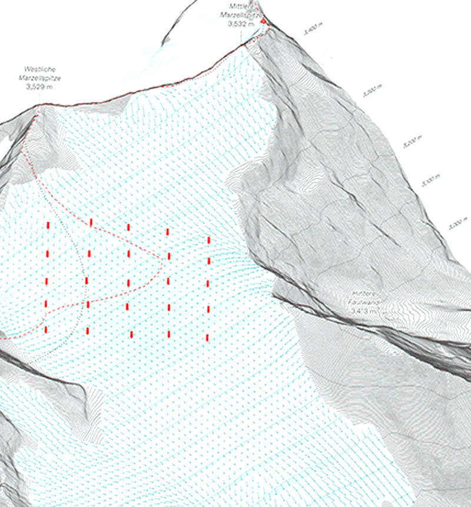
scroll down